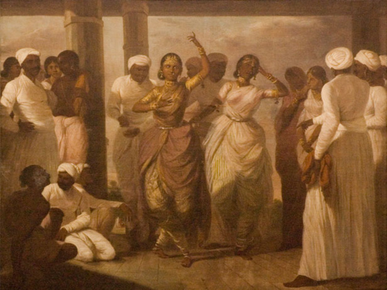
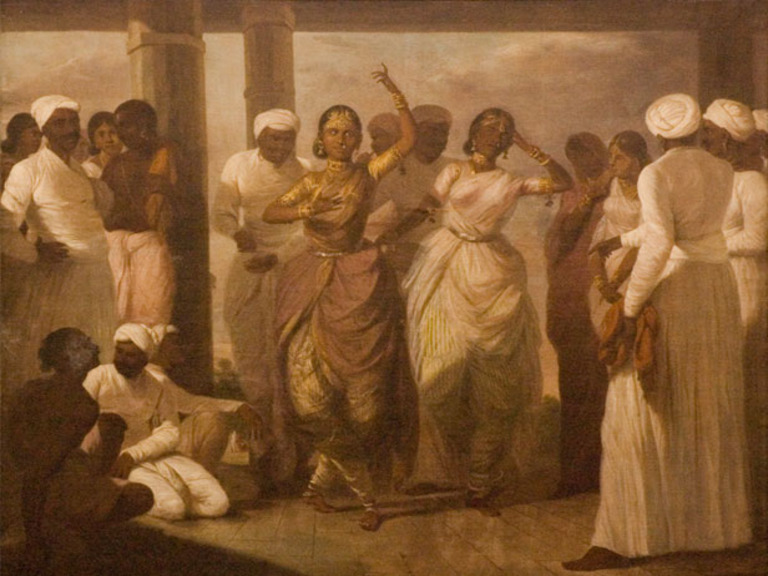

History of Bharatanatyam?
Although Bharatanatyam is now widely practised all over the world, there was a time when Bharatanatyam as a whole was nearing extinction.
The first records of Bharatanatyam can be traced back to 200–300 BCE, when the dance was first mentioned by Bharata in the "Natya Shastra", a Sanskrit manual on the Indian performing arts. Pre-colonial Bharatanatyam was originally danced to obtain holy blessings and please God, and it was often performed in Hindu temples or royal courts. Bharatanatyam dancers were called "Devadasis," also known as "servants to God," because their sole purpose was to attend to God and perform with grace. In essence, they were married to God but were allowed to have affairs with men outside of their holy practices.
With the progression of the dance form also came backlash and scandals. As the British entered South Asia, particularly India and Sri Lanka, in the early 19th century, Bharatanatyam was being erased one step at a time. Christian missionaries and British politicians referred to Devdasis as "prostitutes" and began limiting where these dancers could perform. In 1910, the Madras Presidency, under British colonial rule at the time, banned Bharatanatyam for good, and pre-colonial Bharatanatyam met its end.
 

Present Day
Post-colonial Bharatanatyam somewhat differs from its pre-colonial past. Bharatanatyam has evolved and been split into different styles, all of which vary from one another. Instead of being performed solely for gods, Bharatanatyam has become a cultural art that can be enjoyed by a wide range of audiences. It can now be seen in temples as well as on stages in theatres. A big jump from its pre-colonial background. Post-Colonial Bharatanatyam has also opened its door for males to perform, as Bharatanatyam was previously a female-exclusive art.
We have also seen the expansion of Bharatanatyam in countries where Tamil people have immigrated. These countries include Canada, the U.S., New Zealand, Australia, the U.K., and much more. New schools dedicated to the art of Bharatanatyam have opened all over the world, and even with its fair share of ups and downs over the years, Bharatanatyam continues to thrive all over this earth.
With the rise of social media, specifically Youtube, Instagram, and Tiktok, a new style of Bharatanatyam has risen to the top. Bharatanatyam and hip-hop fusions have become increasingly popular since the beginning of the pandemic, and with dancers turned content creators looking to spice up Bharatnatyam, this seemed to make a perfect match! These new videos showcase Bharatanatyam dancers mixing their favourite rap and hip-hop songs with classical tunes to create amazing fusion music, perfect for both beauty and bop!
This new style has taken the internet by storm, and whether you like it or not, it's becoming increasingly popular with young Bharatanatyam artists. Looking into the future, this may be the start of a new chapter for Bharatanatyam, or a completely new style could be formed!